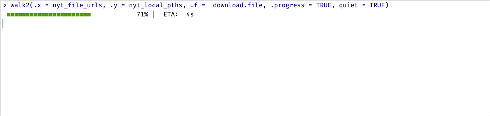

purrr updates (v1.0.0)
This post is going to cover the recent updates to the purrr package. The release of version 1.0.0 (and dev version v1.0.1) had some breaking changes, which I will cover below. But first, I’ll dive into some attributes of R’s functions and objects that make purrr particularly useful, and I’ll work through iteration problems I’ve encountered (and solved with purrr).
Refresher: functions and objects
If you’re like me, you’ve never been a big fan of for loops. They’re an important concept to grasp, but if you’ve ever had to debug what’s happening in multiple nested for loops, you’ve probably found yourself asking if there’s a better way to iterate.
In a functional programming language like R, it’s nice when we can have functions perform a lot of the work we’d have to write into a for loop.
Generic functions & S3 objects
R’s syntax avoids explicit iteration by allowing certain generic functions to be used across different types (or objects). For example, the base plot() and summary() functions are S3 generic function:
Which means plot() can be applied to S3 objects, like time-series (ts) and rectangular datasets (data.frame):
summary(datasets::LakeHuron)
## Min. 1st Qu. Median Mean 3rd Qu. Max.
## 576.0 578.1 579.1 579.0 579.9 581.9
summary(datasets::chickwts)
## weight feed
## Min. :108.0 casein :12
## 1st Qu.:204.5 horsebean:10
## Median :258.0 linseed :12
## Mean :261.3 meatmeal :11
## 3rd Qu.:323.5 soybean :14
## Max. :423.0 sunflower:12
summary() is a particularly versatile function, because it can be used on data.frames, a single column in a data.frame, model outputs, and more.
Click Code below to view an example using summary()
Code
# get summary of columns ----------------------------------------------------
summary(mtcars$hp)
## Min. 1st Qu. Median Mean 3rd Qu. Max.
## 52.0 96.5 123.0 146.7 180.0 335.0
summary(mtcars$mpg)
## Min. 1st Qu. Median Mean 3rd Qu. Max.
## 10.40 15.43 19.20 20.09 22.80 33.90
# store model output -------------------------------------------------------
lm_mod <- lm(formula = mpg ~ hp, data = mtcars)
lm_mod
##
## Call:
## lm(formula = mpg ~ hp, data = mtcars)
##
## Coefficients:
## (Intercept) hp
## 30.09886 -0.06823
# get summary of model output -----------------------------------------------
summary(lm_mod)
##
## Call:
## lm(formula = mpg ~ hp, data = mtcars)
##
## Residuals:
## Min 1Q Median 3Q Max
## -5.7121 -2.1122 -0.8854 1.5819 8.2360
##
## Coefficients:
## Estimate Std. Error t value Pr(>|t|)
## (Intercept) 30.09886 1.63392 18.421 < 2e-16 ***
## hp -0.06823 0.01012 -6.742 1.79e-07 ***
## ---
## Signif. codes: 0 '***' 0.001 '**' 0.01 '*' 0.05 '.' 0.1 ' ' 1
##
## Residual standard error: 3.863 on 30 degrees of freedom
## Multiple R-squared: 0.6024, Adjusted R-squared: 0.5892
## F-statistic: 45.46 on 1 and 30 DF, p-value: 1.788e-07
# pass the output from one S3 generic to another S3 generic -----------------
coef(summary(lm_mod))
## Estimate Std. Error t value Pr(>|t|)
## (Intercept) 30.09886054 1.6339210 18.421246 6.642736e-18
## hp -0.06822828 0.0101193 -6.742389 1.787835e-07FP + OOP
plot() and summary() are parametric polymorphic (generic) functions, which means we see slightly different behaviors based on the object we pass into it.
As you can see, generic functions are flexible and efficient because we’re not having to define a new function for each object–the output from the function depends (in part) on the structure of the object.
Functional programming is complementary to object-oriented programming, which has been the dominant programming paradigm for the last several decades. - Advanced R, 2nd edition
The relationship between functions and objects is what makes purrr (and other tools for iteration) extremely helpful for solving common problems programmers encounter when working with data. Similar to generic functions, these functions allow us to express iterative behavior using a complete and consistent set of tools.
Iteration problems
In programming, iteration refers to defining an input and applying an operation over every part of it. Some examples of problems that iteration can solve include:
You have a list of objects and you’d like to apply a function (or a series of functions) over the elements in the list
You have a folder full of files you’d like to rename or copy to a new directory
You’d like to download a collection of files from separate URLS
You have several years of data, and each year is contained in separate file. You’d like to read these data into R, combine them into a single dataset
You have a non-rectangular (i.e., list) of datasets you’d like to split into individual
data.frames, then export these into separate file paths.
These are all problems I’ve personally encountered that required a variety of iteration tools to tackle. I’ll start with the first example because the principles remain the same (regardless of the size/scope of the problem):
The for loop
for loops are ubiquitous in programming, and (for the most part) they describe the types of problems they’re solving:
“for each
iteminobject, dooperation”
I have a list (my_list), with items in various cases:
my_list
## $words
## [1] "rING" "REGArD" "neceSSAry" "yesterDay" "IncOme"
##
## $sentences
## [1] "OnE STeP mOre AnD tHe bOaRD wiLl colLAPSE."
## [2] "tHE BILL WAs paid eveRy tHird wEeK."
## [3] "CodE iS UseD WHEn sECRetS Are SeNT."
##
## $letters
## [1] "V" "a" "m" "d" "l" "R" "I" "h" "J" "C"If I try to use the tolower() on my_list, it returns a vector.
How can I apply the tolower() function to each item in my_list, and return the original object type? I’ll use my_list and tolower() to demonstrate how I was taught to write for loops:
-
First: define the sequence, ‘for
[item]in[items in object]’- In this case,
xis the abstracted[item]taking on the values returned byseq_along(my_list)(the[items in object])
- In this case,
-
Second: write the operations the for loop will perform per iteration (i.e. the first iteration is
x=tolower(my_list[[1]]); the second iteration isx=tolower(my_list[[2]]); etc.)- Test this with a few values if you like
tolower(my_list[[2]])[1] "one step more and the board will collapse." [2] "the bill was paid every third week." [3] "code is used when secrets are sent." -
Third: define an (optional) object to capture the results of the loop (
lc_list), and make sure it’s the correct size- Two methods for creating empty lists
Finally, we put it all together in a for loop
# define capture object
lc_list <- vector(mode = "list", length = 3)
# write sequence
for (x in seq_along(my_list)) {
# write operations/capture in object
lc_list[[x]] <- tolower(my_list[[x]])
# clean up container
names(lc_list) <- c("words", "sentences", "letters")
}
lc_list$words
[1] "ring" "regard" "necessary" "yesterday" "income"
$sentences
[1] "one step more and the board will collapse."
[2] "the bill was paid every third week."
[3] "code is used when secrets are sent."
$letters
[1] "v" "a" "m" "d" "l" "r" "i" "h" "j" "c"This was a simple example, but it demonstrates the basic components in a for loop:
- The sequence to index
-
for (x in seq_along(my_list))
-
- The operations to iterate
-
tolower(my_list[[x]])
-
- The object to capture the results
-
lc_list <- vector(mode = "list", length = 3)and
lc_list[[x]]
-
Base R
base R has the _apply family of functions (apply(), lapply(), sapply(), vapply(), etc.) that remove a lot of the ‘book keeping’ code we had to write in the for loop.
lapply()
Sticking with the my_list and tolower() example, the apply function I want is lapply() (pronounced ‘l-apply’), and the l stands for list.
lapply() has only two required arguments:
Xthe object we want to iterate overFUNbeing the function we want iterated
lapply(X = my_list, FUN = tolower)$words
[1] "ring" "regard" "necessary" "yesterday" "income"
$sentences
[1] "one step more and the board will collapse."
[2] "the bill was paid every third week."
[3] "code is used when secrets are sent."
$letters
[1] "v" "a" "m" "d" "l" "r" "i" "h" "j" "c"sapply()
sapply() attempts to simplify the result depending on the X argument. If X is a list containing vectors where every element has the same length (and it’s greater than 1), then sapply() returns a matrix:
If a vector is passed to X where every element is length 1, then a vector is returned:
Finally, if X is a list where elements have a length greater than 1, then a list is returned (making it identical to lapply()
This is because sapply is a wrapper around lapply, but has simplify and USE.NAMES set to FALSE (see what happens below when I change them to TRUE)
Anonmymous functions
The FUN argument can also take anonymous (undefined) functions. For example, if I wanted to access the second elements in my_list, I could pass an anonymous function the FUN (with the index):
lapply(X = my_list, FUN = function(x) x[[2]])$words
[1] "REGArD"
$sentences
[1] "tHE BILL WAs paid eveRy tHird wEeK."
$letters
[1] "a"vapply()
Finally vapply() is unique in that it always simplifies the returned output. If we repeat the example above, we see the returned value is character vector:
The apply functions get us much further than writing for loops because we can 1) iterate over vectors and lists, 2) control the output objects, and 3) write less code. Unlike generic functions, apply functions are designed to work with specific object types, and return values depending on these objects.
One downside of apply functions is they don’t play well with data.frames or tibbles. However, we can control their return values (and manually supply these to tibble::tibble() or data.frame()
Another downside of the apply functions is they’re not very uniform. Each function has slight variations in their arguments and rules for return values. This is where purrr comes in…
purrr
If you’re new to purrr, a great way to start using it’s functions is with a recipe covered in Charlotte Wickham’s tutorial
Do it for one element
Turn it into a recipe
Use
purrr::map()to do it for all elements
I’ll work through these three steps below using my_list and tolower()
1. Do it for one element
The goal with the first step is to get a minimal working example with a single element from the object I want to iterate over (with the function I want to iterate with).
For this example, I need to subset my_list for a single element at position [[1]], [[2]], or [[3]] (or using one of the vector names).
I’ll then pass this element to tolower() and make sure it’s the desired behavior:
# subset an element from the list
? <- my_list[[?]]
# apply a function to extracted element
tolower(?)? <- my_list[[?]]= subset element from the list (my_list)tolower(?)= apply operation (i.e., function) to extracted element.
my_words <- my_list[['words']]
tolower(my_words)[1] "ring" "regard" "necessary" "yesterday" "income" Now that I have a working example for one element, in the next step I’ll abstract these parts into the function arguments.
2. Turn it into a recipe
A standard purrr recipe defines .x (the object) and .f (the function), followed by any additional function arguments.
.x= a list or atomic vector.f= the function we want to apply over every element in.x
.x = my_list, .f = tolower3. map() it across all elements
In purrr::map(), the .x argument is the object (list or atomic vector) I want to iterate over, and .f is the function (i.e., operation) I want applied to every element of .x
If I want to convert the case of every element in my_list to lowercase with tolower() I would use the following standard purrr::map() format:
purrr::map(.x = my_list, .f = tolower)$words
[1] "ring" "regard" "necessary" "yesterday" "income"
$sentences
[1] "one step more and the board will collapse."
[2] "the bill was paid every third week."
[3] "code is used when secrets are sent."
$letters
[1] "v" "a" "m" "d" "l" "r" "i" "h" "j" "c"And there you have it! map() is the core function and workhorse of the purrr package. It’s important to note that purrr::map() always returns a list, regardless of the object supplied to .x.
Version 1.0.0 updates
Now I’ll cover some of the updates in purrr 1.0.0. I’ll be using mixed_list, a list with five different types of vectors.
mixed_list$booleans
[1] TRUE FALSE TRUE FALSE
$integers
[1] 1 3 7 8 10
$doubles
[1] 2.954 3.070 2.885 3.028 2.648
$strings
[1] "choice" "same" "equal" "sound" "most"
$dates
[1] "2023-03-28" "2023-02-16" "2022-12-28"
map() updates
As noted above, by default purrr::map() returns a list. If I’d like to return a vector, I can use one of the map_ variations (there’s one for each vector type).
-
By mapping the
is.<type>()functions the elements inmixed_list, I can test which elements inmixed_listreturnTRUE:-
map_lgl(): returns a logical vector
mixed_list |> purrr::map_lgl(\(x) is.logical(x))booleans integers doubles strings dates TRUE FALSE FALSE FALSE FALSE-
map_int(): returns an integer vector
mixed_list |> purrr::map_int(\(x) is.integer(x))booleans integers doubles strings dates 0 1 0 0 0-
map_dbl(): returns a double vector
-
map_chr(): returns a character vector
mixed_list |> purrr::map_chr(\(x) is.character(x))Warning: Automatic coercion from logical to character was deprecated in purrr 1.0.0. ℹ Please use an explicit call to `as.character()` within `map_chr()` instead.booleans integers doubles strings dates "FALSE" "FALSE" "FALSE" "TRUE" "FALSE" -
When we test for characters in mixed_list, we see the following warning:
Warning: Automatic coercion from logical to character was deprecated in purrr1.0.0. Please use an explicit call to as.character() within map_chr() instead
As we can see from the output above, the logical return values from is.character() are coerced to characters (this behavior is now deprecated).
map_vec()
However, the previous purrr::map_raw() function has been replaced with purrr::map_vec(), which “simplifies to the common type of the output.” I’ll demonstrate below with the characters in mixed_list:
mixed_list |> purrr::map_vec(\(x) is.character(x))booleans integers doubles strings dates
FALSE FALSE FALSE TRUE FALSE Notice the difference in output? The results are the same as above, but output is not commented (##). The same is true when I test the dates in mixed_list using lubridate::is.Date():
Anonymous functions
R introduced the shorthand anonymous function syntax in version 4.1.0:
“
\(x) x + 1is parsed asfunction(x) x + 1.”
Below is a comparison of an anonymous (unnamed) function and the updated shorthand syntax:
-
Standard anonymous function
(function(x) tolower(x))("pIrAtES Ship")[1] "pirates ship" -
The updated anonymous syntax is below:
(\(x) tolower(x))("pIrAtES Ship")[1] "pirates ship"
Writing the code above using an anonymous function would look like this:
Anonymous functions make it easier to understand which arguments belong to which function and will tend to yield better error messages.
I’ll confirm the outputs from both methods are identical using waldo::compare():
Worked Examples
In this section, I’ll be working through some of the uses I’ve for purrr’s functions. I’ve tried to choose tasks that are common across most projects so my code can be easily copied and adapted.
Downloading files
You’d like to download a collection of files from separate URLS
I have a collection of 30 .csv files from Doing Data Science by Cathy O’Neil and Rachel Schutt (O’Reilly Media) in a GitHub repo. Let’s assume I want to download all of these files into my RStudio session (and not clone the repo).
I’ll navigate to the raw url for the first data file (nyt1.csv), then paste this into a character vector:
nyt_url <- "https://raw.githubusercontent.com/mjfrigaard/dds-data/main/nyt1.csv"Knowing that all of the files on GitHub with have a similar root or dir, I can use nyt_url to generate urls for each of the 31 files.
- First I get the folder of the files on GitHub with
fs::path_dir() - I create a vector with the 31 file names
- I combine the directory portion of the url with file name in
nyt_file_urls
# create file urls
nyt_dir_url <- fs::path_dir(nyt_url)
nyt_dir_url[1] "https:/raw.githubusercontent.com/mjfrigaard/dds-data/main"# add numbers to name
nyt_file_nms <- paste0("nyt", 1:31, ".csv")
# combine
nyt_file_urls <- paste(nyt_dir_url, nyt_file_nms, sep = "/")
head(nyt_file_urls)[1] "https:/raw.githubusercontent.com/mjfrigaard/dds-data/main/nyt1.csv"
[2] "https:/raw.githubusercontent.com/mjfrigaard/dds-data/main/nyt2.csv"
[3] "https:/raw.githubusercontent.com/mjfrigaard/dds-data/main/nyt3.csv"
[4] "https:/raw.githubusercontent.com/mjfrigaard/dds-data/main/nyt4.csv"
[5] "https:/raw.githubusercontent.com/mjfrigaard/dds-data/main/nyt5.csv"
[6] "https:/raw.githubusercontent.com/mjfrigaard/dds-data/main/nyt6.csv"I’ll need another vector of destination file names on my local machine, which I can do by combining the file names (nyt_file_nms) with the local destination folder (dds-nyt).
After creating the destination folder, I’ll use the download.file() function to test downloading a single .csv files into my local folder (dds-nyt/). download.file() has a progress bar which tells me if the file downloaded successfully.
# do it for one
fs::dir_create("dds-nyt")
download.file(url = nyt_file_urls[1], destfile = nyt_local_pths[1])trying URL 'https:/raw.githubusercontent.com/mjfrigaard/dds-data/main/nyt1.csv'
Content type 'text/plain; charset=utf-8' length 4920381 bytes (4.7 MB)
==================================================
downloaded 4.7 MBThe function I’m using to download the files takes two inputs (url and destfile), which changes the recipe a bit, because I need a purrr function with the following:
.xthe input vector of existing url paths.ythe output vector of destination file pathsAdditional arguments passed from
download.file()(likequiet = TRUE)
In this case, I don’t need purrr to return value–I just need the purrr function to iterate over the items and write them to the new location.
walk() is ideal for this circumstance:
“
walk()returns the input.x(invisibly)” and “The return value of.f()is ignored”
What does ‘return .x invisibly’ and ‘the side-effect of .f’
Return invisibly
The previous purrr functions I covered varied in the kinds of values they returned (lists vs. vectors), but for some operations I won’t need a return value. If I’m ever curious about whether I should be using map() or walk(), I’ll ask myself, “would it make sense to assign the output from this function to an object?”
If the answer is no, then I probably need to be thinking walk() instead of map()
Side-effects
In the help documentation walk()’s description states, “calls .f for its side-effect”
(i.e., there’s nothing to assign the output from that function to).
Downloading files performs
I’ll use walk2() below and add .progress = TRUE to view the purrr progress bar (and quiet = TRUE to silence the download.file() progress bar).
walk2(.x = nyt_file_urls, .y = nyt_local_pths, .f = download.file,
.progress = TRUE, quiet = TRUE)
I can confirm the download using fs::dir_tree()
fs::dir_tree("dds-nyt")dds-nyt
├── nyt1.csv
├── nyt10.csv
├── nyt11.csv
├── nyt12.csv
├── nyt13.csv
├── nyt14.csv
├── nyt15.csv
├── nyt16.csv
├── nyt17.csv
├── nyt18.csv
├── nyt19.csv
├── nyt2.csv
├── nyt20.csv
├── nyt21.csv
├── nyt22.csv
├── nyt23.csv
├── nyt24.csv
├── nyt25.csv
├── nyt26.csv
├── nyt27.csv
├── nyt28.csv
├── nyt29.csv
├── nyt3.csv
├── nyt30.csv
├── nyt31.csv
├── nyt4.csv
├── nyt5.csv
├── nyt6.csv
├── nyt7.csv
├── nyt8.csv
└── nyt9.csvCopying a directory of files
You have a folder of files you’d like to rename or copy to a new directory
The collection of 31 .csv files from Doing Data Science by Cathy O’Neil and Rachel Schutt (O’Reilly Media) are now in the dds-nyt/ folder.
As with any project, I don’t want to alter the raw data, so I’m going to copy these files into dds-nyt-raw/ and dds-nyt-processed/. I also want the processed file names to have a date stamp prefix.
file_pths <- list.files("dds-nyt", full.names = TRUE, pattern = ".csv$")
head(file_pths)[1] "dds-nyt/nyt1.csv" "dds-nyt/nyt10.csv" "dds-nyt/nyt11.csv"
[4] "dds-nyt/nyt12.csv" "dds-nyt/nyt13.csv" "dds-nyt/nyt14.csv"I’ll start with the raw data folder. I need to create a vector of the new raw file paths and names: raw_file_pths (the raw data paths will have the original file names)
# do it for one
gsub(pattern = "^dds-nyt",
replacement = "dds-nyt/raw",
x = file_pths[1])
## [1] "dds-nyt/raw/nyt1.csv"
# write the recipe
file_pths |> purrr::map_chr(\(x) gsub(x,
pattern = "^dds-nyt",
replacement = "dds-nyt/raw")) |> head()
## [1] "dds-nyt/raw/nyt1.csv" "dds-nyt/raw/nyt10.csv" "dds-nyt/raw/nyt11.csv"
## [4] "dds-nyt/raw/nyt12.csv" "dds-nyt/raw/nyt13.csv" "dds-nyt/raw/nyt14.csv"
# map it across all
raw_file_pths <- file_pths |>
purrr::map_chr(\(x) gsub(x,
pattern = "^dds-nyt",
replacement = "dds-nyt/raw"))Before copying the files, I need to create the destination folder for the raw data (dds-nyt/raw). Then, I’ll make sure I can copy the first element from file_pths into the path in the first element of raw_file_pths:
fs::dir_create("dds-nyt/raw")
# do it for one
fs::file_copy(
path = file_pths[1],
new_path = raw_file_pths[1],
overwrite = TRUE)
fs::dir_tree("dds-nyt/raw", type = "any")dds-nyt/raw
└── nyt1.csvwalk2(.x = file_pths, .y = raw_file_pths, .f = fs::file_copy,
.progress = TRUE, overwrite = TRUE)
fs::dir_tree("dds-nyt/raw", type = "any")dds-nyt/raw
├── nyt1.csv
├── nyt10.csv
├── nyt11.csv
├── nyt12.csv
├── nyt13.csv
├── nyt14.csv
├── nyt15.csv
├── nyt16.csv
├── nyt17.csv
├── nyt18.csv
├── nyt19.csv
├── nyt2.csv
├── nyt20.csv
├── nyt21.csv
├── nyt22.csv
├── nyt23.csv
├── nyt24.csv
├── nyt25.csv
├── nyt26.csv
├── nyt27.csv
├── nyt28.csv
├── nyt29.csv
├── nyt3.csv
├── nyt30.csv
├── nyt31.csv
├── nyt4.csv
├── nyt5.csv
├── nyt6.csv
├── nyt7.csv
├── nyt8.csv
└── nyt9.csvNow that I’ve copied the files into their respective folders, I’ll need to remove the files from their original location in the parent dds-nyt folder.
Fortunately, I have a vector of these files in file_pths, and I can test removal with fs::file_delete():
fs::file_delete(file_pths[1])Great! Now that I know this will work, I’ll use walk() because I want .x returned invisibly and the side-effect of .f
walk(.x = file_pths, .f = fs::file_delete)Error in `map()`:
ℹ In index: 1.
Caused by error:
! [ENOENT] Failed to remove 'dds-nyt/nyt1.csv': no such file or directoryWhy does this throw an error? Well–I’ve just deleted the first element in file_pths, so when fs::file_delete() when looking for that file, it found nothing and returned an error. I can protect against this by supplying the output from list.files() directly to walk2(), but include a pattern so it only matches the .csv files.
walk(# list CURRENT files
.x = list.files(
path = "dds-nyt",
pattern = ".csv$",
full.names = TRUE),
# map function
.f = fs::file_delete)And confirm the new folder contents and structure
fs::dir_tree("dds-nyt", type = "any", recurse = TRUE)dds-nyt
└── raw
├── nyt1.csv
├── nyt10.csv
├── nyt11.csv
├── nyt12.csv
├── nyt13.csv
├── nyt14.csv
├── nyt15.csv
├── nyt16.csv
├── nyt17.csv
├── nyt18.csv
├── nyt19.csv
├── nyt2.csv
├── nyt20.csv
├── nyt21.csv
├── nyt22.csv
├── nyt23.csv
├── nyt24.csv
├── nyt25.csv
├── nyt26.csv
├── nyt27.csv
├── nyt28.csv
├── nyt29.csv
├── nyt3.csv
├── nyt30.csv
├── nyt31.csv
├── nyt4.csv
├── nyt5.csv
├── nyt6.csv
├── nyt7.csv
├── nyt8.csv
└── nyt9.csvImport multiple datasets
You have several days of data, and each day is contained in separate file. You’d like to read these data into R, and combine them into a single dataset
Now that I have separate raw and processed folders, I can import the NYT data into R. Below I’ve imported a single file from the raw data folder to examine it’s contents:
spc_tbl_ [458,441 × 5] (S3: spec_tbl_df/tbl_df/tbl/data.frame)
$ Age : num [1:458441] 36 73 30 49 47 47 0 46 16 52 ...
$ Gender : num [1:458441] 0 1 0 1 1 0 0 0 0 0 ...
$ Impressions: num [1:458441] 3 3 3 3 11 11 7 5 3 4 ...
$ Clicks : num [1:458441] 0 0 0 0 0 1 1 0 0 0 ...
$ Signed_In : num [1:458441] 1 1 1 1 1 1 0 1 1 1 ...
- attr(*, "spec")=
.. cols(
.. Age = col_double(),
.. Gender = col_double(),
.. Impressions = col_double(),
.. Clicks = col_double(),
.. Signed_In = col_double(),
.. .delim = ","
.. )
- attr(*, "problems")=<externalptr> Each nyt file contains daily ads shown and clicks recorded on the New York Times home page. The rows represent users, and the variables are: Age, Gender (0 = female, 1 = male), Impressions (number impressions), Clicks (number clicks), and a binary indicator for signed in or not Signed_in.
I’ll add some hypothetical wrangling steps to make this example more realistic.
Create
age_group, an ordered factor which contains six levels of Age (“<18”, “18-24”, “25-34”, “35-44”, “45-54”, “55-64”, and “65+”)Create
ctr_rateor click-through rate, calculated as the number of clicks / the number of impressions. Round it to 3 digits.Create
female, a factor version ofGender, where whenGender=0, thenfemale="yes", and whenGender=1, thenfemale="no"Create
signed_in, a factor variable with levels"no"and"yes"from theSigned_In=0and1
I’ve bundled all of these steps into a function (nyt_data_processing()) that I can pass each dataset through:
Code
nyt_data_processing <- function(nyt_csv) {
orig_nms <- c("Age", "Gender", "Impressions", "Clicks", "Signed_In")
nyt_nms <- names(nyt_csv)
if (isFALSE(identical(x = orig_nms, y = nyt_nms))) {
cli::cli_abort("these data don't have the correct columns!")
} else {
nyt_proc <- nyt_csv |>
dplyr::mutate(
# create age_group variable
age_group = case_when(
Age < 18 ~ "<18",
Age >= 18 & Age < 25 ~ "18-24",
Age >= 25 & Age < 35 ~ "25-34",
Age >= 35 & Age < 45 ~ "35-44",
Age >= 45 & Age < 55 ~ "45-54",
Age >= 55 & Age < 65 ~ "55-64",
Age >= 65 ~ "65+"),
# factor age_group (ordered)
age_group = factor(age_group,
levels = c("<18", "18-24", "25-34",
"35-44", "45-54", "55-64", "65+"),
ordered = TRUE),
# create CTR variable
ctr_rate = round(x = Clicks/Impressions, digits = 3),
# create new Female variable
female = case_when(
Gender == 0 ~ "yes",
Gender == 1 ~ "no",
TRUE ~ NA_character_),
# factor female (un-ordered)
female = factor(female,
levels = c("no", "yes")),
signed_in = case_when(
Signed_In == 0 ~ "no",
Signed_In == 1 ~ "yes",
TRUE ~ NA_character_),
# factor signed_in (un-ordered)
signed_in = factor(signed_in,
levels = c("no", "yes"))) |>
# remove Signed_in
dplyr::select(-c(Signed_In)) |>
# format columns
janitor::clean_names()
}
return(nyt_proc)
}I’ll do some quick checks to make sure it only works with the raw data columns:
nyt1_proc <- nyt_data_processing(nyt1)
str(nyt1_proc)spc_tbl_ [458,441 × 8] (S3: spec_tbl_df/tbl_df/tbl/data.frame)
$ age : num [1:458441] 36 73 30 49 47 47 0 46 16 52 ...
$ gender : num [1:458441] 0 1 0 1 1 0 0 0 0 0 ...
$ impressions: num [1:458441] 3 3 3 3 11 11 7 5 3 4 ...
$ clicks : num [1:458441] 0 0 0 0 0 1 1 0 0 0 ...
$ age_group : Ord.factor w/ 7 levels "<18"<"18-24"<..: 4 7 3 5 5 5 1 5 1 5 ...
$ ctr_rate : num [1:458441] 0 0 0 0 0 0.091 0.143 0 0 0 ...
$ female : Factor w/ 2 levels "no","yes": 2 1 2 1 1 2 2 2 2 2 ...
$ signed_in : Factor w/ 2 levels "no","yes": 2 2 2 2 2 2 1 2 2 2 ...
- attr(*, "spec")=
.. cols(
.. Age = col_double(),
.. Gender = col_double(),
.. Impressions = col_double(),
.. Clicks = col_double(),
.. Signed_In = col_double(),
.. .delim = ","
.. )
- attr(*, "problems")=<externalptr> nyt_data_processing(nyt1_proc)Error in `nyt_data_processing()`:
! these data don't have the correct columns!Now I’m ready to write the import step. First I’ll store the raw file paths in raw_data_pths, then take a subset to test with (test_raw_data_pths).
raw_data_pths <- list.files(path = "dds-nyt/raw", pattern = ".csv$", full.names = TRUE)
test_raw_data_pths <- raw_data_pths[1:2]
test_raw_data_pths[1] "dds-nyt/raw/nyt1.csv" "dds-nyt/raw/nyt10.csv"We’ll test purrr::map() and vroom::vroom() to import the .csv files in test_raw_data_pths into a list. I also add str(list.len = 2) to limit the output.
test_raw_data_pths |>
# import
purrr::map(
vroom::vroom,
delim = ",", show_col_types = FALSE) |>
str(list.len = 2)List of 2
$ : spc_tbl_ [458,441 × 5] (S3: spec_tbl_df/tbl_df/tbl/data.frame)
..$ Age : num [1:458441] 36 73 30 49 47 47 0 46 16 52 ...
..$ Gender : num [1:458441] 0 1 0 1 1 0 0 0 0 0 ...
.. [list output truncated]
..- attr(*, "spec")=
.. .. cols(
.. .. Age = col_double(),
.. .. Gender = col_double(),
.. .. Impressions = col_double(),
.. .. Clicks = col_double(),
.. .. Signed_In = col_double(),
.. .. .delim = ","
.. .. )
..- attr(*, "problems")=<externalptr>
$ : spc_tbl_ [452,766 × 5] (S3: spec_tbl_df/tbl_df/tbl/data.frame)
..$ Age : num [1:452766] 59 0 19 44 30 33 41 41 0 23 ...
..$ Gender : num [1:452766] 1 0 0 1 1 1 0 0 0 1 ...
.. [list output truncated]
..- attr(*, "spec")=
.. .. cols(
.. .. Age = col_double(),
.. .. Gender = col_double(),
.. .. Impressions = col_double(),
.. .. Clicks = col_double(),
.. .. Signed_In = col_double(),
.. .. .delim = ","
.. .. )
..- attr(*, "problems")=<externalptr> This returns a list, but you may have noticed I don’t have a great way for keeping track of the data files in the list–this is where purrr::set_names() comes in handy.
purrr::set_names() works a lot like names(), but purrr::set_names() will automatically set the names of x to as.character(x) is no names are provided to nm. See below:
test_raw_data_pths |> purrr::set_names() dds-nyt/raw/nyt1.csv dds-nyt/raw/nyt10.csv
"dds-nyt/raw/nyt1.csv" "dds-nyt/raw/nyt10.csv" Now the imported file will have their file path and name associated with the dataset:
test_raw_data_pths |>
# names
purrr::set_names() |>
# import
purrr::map(
vroom::vroom,
delim = ",", show_col_types = FALSE) |>
str(list.len = 2)List of 2
$ dds-nyt/raw/nyt1.csv : spc_tbl_ [458,441 × 5] (S3: spec_tbl_df/tbl_df/tbl/data.frame)
..$ Age : num [1:458441] 36 73 30 49 47 47 0 46 16 52 ...
..$ Gender : num [1:458441] 0 1 0 1 1 0 0 0 0 0 ...
.. [list output truncated]
..- attr(*, "spec")=
.. .. cols(
.. .. Age = col_double(),
.. .. Gender = col_double(),
.. .. Impressions = col_double(),
.. .. Clicks = col_double(),
.. .. Signed_In = col_double(),
.. .. .delim = ","
.. .. )
..- attr(*, "problems")=<externalptr>
$ dds-nyt/raw/nyt10.csv: spc_tbl_ [452,766 × 5] (S3: spec_tbl_df/tbl_df/tbl/data.frame)
..$ Age : num [1:452766] 59 0 19 44 30 33 41 41 0 23 ...
..$ Gender : num [1:452766] 1 0 0 1 1 1 0 0 0 1 ...
.. [list output truncated]
..- attr(*, "spec")=
.. .. cols(
.. .. Age = col_double(),
.. .. Gender = col_double(),
.. .. Impressions = col_double(),
.. .. Clicks = col_double(),
.. .. Signed_In = col_double(),
.. .. .delim = ","
.. .. )
..- attr(*, "problems")=<externalptr> To add the wrangling function, I can pipe in another call to purrr::map(), and add the custom wrangling function.
test_raw_data_pths |>
# names
purrr::set_names() |>
# import
purrr::map(
vroom::vroom,
delim = ",", show_col_types = FALSE) |>
# wrangle
purrr::map(.f = nyt_data_processing) |>
str(list.len = 2)List of 2
$ dds-nyt/raw/nyt1.csv : spc_tbl_ [458,441 × 8] (S3: spec_tbl_df/tbl_df/tbl/data.frame)
..$ age : num [1:458441] 36 73 30 49 47 47 0 46 16 52 ...
..$ gender : num [1:458441] 0 1 0 1 1 0 0 0 0 0 ...
.. [list output truncated]
..- attr(*, "spec")=
.. .. cols(
.. .. Age = col_double(),
.. .. Gender = col_double(),
.. .. Impressions = col_double(),
.. .. Clicks = col_double(),
.. .. Signed_In = col_double(),
.. .. .delim = ","
.. .. )
..- attr(*, "problems")=<externalptr>
$ dds-nyt/raw/nyt10.csv: spc_tbl_ [452,766 × 8] (S3: spec_tbl_df/tbl_df/tbl/data.frame)
..$ age : num [1:452766] 59 0 19 44 30 33 41 41 0 23 ...
..$ gender : num [1:452766] 1 0 0 1 1 1 0 0 0 1 ...
.. [list output truncated]
..- attr(*, "spec")=
.. .. cols(
.. .. Age = col_double(),
.. .. Gender = col_double(),
.. .. Impressions = col_double(),
.. .. Clicks = col_double(),
.. .. Signed_In = col_double(),
.. .. .delim = ","
.. .. )
..- attr(*, "problems")=<externalptr> For the final step, I’ll bind all the data into a data.frame with the updated purrr::list_rbind() function (set names_to = "id").
test_raw_data_pths |>
# names
purrr::set_names() |>
# import
purrr::map(
vroom::vroom,
delim = ",", show_col_types = FALSE) |>
# wrangle
purrr::map(.f = nyt_data_processing) |>
# bind
purrr::list_rbind(names_to = "id") |>
str()tibble [911,207 × 9] (S3: tbl_df/tbl/data.frame)
$ id : chr [1:911207] "dds-nyt/raw/nyt1.csv" "dds-nyt/raw/nyt1.csv" "dds-nyt/raw/nyt1.csv" "dds-nyt/raw/nyt1.csv" ...
$ age : num [1:911207] 36 73 30 49 47 47 0 46 16 52 ...
$ gender : num [1:911207] 0 1 0 1 1 0 0 0 0 0 ...
$ impressions: num [1:911207] 3 3 3 3 11 11 7 5 3 4 ...
$ clicks : num [1:911207] 0 0 0 0 0 1 1 0 0 0 ...
$ age_group : Ord.factor w/ 7 levels "<18"<"18-24"<..: 4 7 3 5 5 5 1 5 1 5 ...
$ ctr_rate : num [1:911207] 0 0 0 0 0 0.091 0.143 0 0 0 ...
$ female : Factor w/ 2 levels "no","yes": 2 1 2 1 1 2 2 2 2 2 ...
$ signed_in : Factor w/ 2 levels "no","yes": 2 2 2 2 2 2 1 2 2 2 ...Now that we have a complete recipe, so all I do is swap out test vector with the full list of file paths and store the result in nyt_data_proc. I can also confirm all files were imported and wrangled by checking the count() of id.
nyt_data_proc <- raw_data_pths |>
# names
purrr::set_names() |>
# import
purrr::map(
vroom::vroom,
delim = ",", show_col_types = FALSE) |>
# wrangle
purrr::map(.f = nyt_data_processing) |>
# bind
purrr::list_rbind(names_to = "id") dplyr::glimpse(nyt_data_proc)Rows: 14,905,865
Columns: 9
$ id <chr> "dds-nyt/raw/nyt1.csv", "dds-nyt/raw/nyt1.csv", "dds-nyt/r…
$ age <dbl> 36, 73, 30, 49, 47, 47, 0, 46, 16, 52, 0, 21, 0, 57, 31, 0…
$ gender <dbl> 0, 1, 0, 1, 1, 0, 0, 0, 0, 0, 0, 0, 0, 0, 0, 0, 1, 1, 0, 0…
$ impressions <dbl> 3, 3, 3, 3, 11, 11, 7, 5, 3, 4, 8, 3, 4, 6, 5, 6, 3, 5, 4,…
$ clicks <dbl> 0, 0, 0, 0, 0, 1, 1, 0, 0, 0, 1, 0, 0, 0, 0, 0, 0, 0, 0, 0…
$ age_group <ord> 35-44, 65+, 25-34, 45-54, 45-54, 45-54, <18, 45-54, <18, 4…
$ ctr_rate <dbl> 0.000, 0.000, 0.000, 0.000, 0.000, 0.091, 0.143, 0.000, 0.…
$ female <fct> yes, no, yes, no, no, yes, yes, yes, yes, yes, yes, yes, y…
$ signed_in <fct> yes, yes, yes, yes, yes, yes, no, yes, yes, yes, no, yes, …nyt_data_proc |>
dplyr::count(id)# A tibble: 31 × 2
id n
<chr> <int>
1 dds-nyt/raw/nyt1.csv 458441
2 dds-nyt/raw/nyt10.csv 452766
3 dds-nyt/raw/nyt11.csv 478066
4 dds-nyt/raw/nyt12.csv 396308
5 dds-nyt/raw/nyt13.csv 786044
6 dds-nyt/raw/nyt14.csv 440338
7 dds-nyt/raw/nyt15.csv 437567
8 dds-nyt/raw/nyt16.csv 448917
9 dds-nyt/raw/nyt17.csv 445228
10 dds-nyt/raw/nyt18.csv 451763
# ℹ 21 more rowsExport multiple datasets
You have a non-rectangular (i.e., list) of datasets you’d like to split into individual
data.frames, then export these into separate file paths
Now I have a processed dataset, and I want to export this into a dds-nyt/processed/ folder.
Creating a vector of processed data file paths is a little more involved because I wanted to add the date prefix, and because I want to add this path as a variable in the nyt_data_proc dataset.
I do this below in proc_file_pth:
# create file names
nyt_data_proc_pths <- dplyr::mutate(.data = nyt_data_proc,
file_nm = tools::file_path_sans_ext(base::basename(id)),
proc_file_pth = paste0("dds-nyt/processed/",
as.character(Sys.Date()), "-",
file_nm))
nyt_data_proc_pths |> dplyr::count(proc_file_pth)
## # A tibble: 31 × 2
## proc_file_pth n
## <chr> <int>
## 1 dds-nyt/processed/2023-04-07-nyt1 458441
## 2 dds-nyt/processed/2023-04-07-nyt10 452766
## 3 dds-nyt/processed/2023-04-07-nyt11 478066
## 4 dds-nyt/processed/2023-04-07-nyt12 396308
## 5 dds-nyt/processed/2023-04-07-nyt13 786044
## 6 dds-nyt/processed/2023-04-07-nyt14 440338
## 7 dds-nyt/processed/2023-04-07-nyt15 437567
## 8 dds-nyt/processed/2023-04-07-nyt16 448917
## 9 dds-nyt/processed/2023-04-07-nyt17 445228
## 10 dds-nyt/processed/2023-04-07-nyt18 451763
## # ℹ 21 more rowsNote that I didn’t include the file extension, but that’s because I might want to change this when I’m exporting.
Now that I have my data (nyt_data_proc_pths) and processed file paths (proc_file_pth), I need create the processed data folder, then group nyt_data_proc_pths on the new proc_file_pth variable, and then pass the output to the group_walk() function from dplyr:
# create file names
# create folder
fs::dir_create("dds-nyt/processed/")
#
nyt_data_proc_pths |>
dplyr::group_by(proc_file_pth) |>
dplyr::group_walk( ~vroom::vroom_write(x = .x,
file = paste0(.y$proc_file_pth, ".csv"),
delim = ","))
# check
fs::dir_tree("dds-nyt/processed/")
## dds-nyt/processed/
## ├── 2023-04-07-nyt1.csv
## ├── 2023-04-07-nyt10.csv
## ├── 2023-04-07-nyt11.csv
## ├── 2023-04-07-nyt12.csv
## ├── 2023-04-07-nyt13.csv
## ├── 2023-04-07-nyt14.csv
## ├── 2023-04-07-nyt15.csv
## ├── 2023-04-07-nyt16.csv
## ├── 2023-04-07-nyt17.csv
## ├── 2023-04-07-nyt18.csv
## ├── 2023-04-07-nyt19.csv
## ├── 2023-04-07-nyt2.csv
## ├── 2023-04-07-nyt20.csv
## ├── 2023-04-07-nyt21.csv
## ├── 2023-04-07-nyt22.csv
## ├── 2023-04-07-nyt23.csv
## ├── 2023-04-07-nyt24.csv
## ├── 2023-04-07-nyt25.csv
## ├── 2023-04-07-nyt26.csv
## ├── 2023-04-07-nyt27.csv
## ├── 2023-04-07-nyt28.csv
## ├── 2023-04-07-nyt29.csv
## ├── 2023-04-07-nyt3.csv
## ├── 2023-04-07-nyt30.csv
## ├── 2023-04-07-nyt31.csv
## ├── 2023-04-07-nyt4.csv
## ├── 2023-04-07-nyt5.csv
## ├── 2023-04-07-nyt6.csv
## ├── 2023-04-07-nyt7.csv
## ├── 2023-04-07-nyt8.csv
## └── 2023-04-07-nyt9.csvI’ll import the first file in the new processed data folder and check it against the nyt1_proc data to evaluate the differences.
nyt1_proc_check <- vroom::vroom(
list.files(path = "dds-nyt/processed",
pattern = ".csv$",
full.names = TRUE)[[1]], # grab the first file
delim = ",", show_col_types = FALSE
)waldo::compare(
x = nyt1_proc,
y = nyt1_proc_check)`old` is length 8
`new` is length 10
names(old) | names(new)
[1] "age" - "id" [1]
[2] "gender" - "age" [2]
[3] "impressions" - "gender" [3]
[4] "clicks" - "impressions" [4]
[5] "age_group" - "clicks" [5]
[6] "ctr_rate" - "age_group" [6]
[7] "female" - "ctr_rate" [7]
[8] "signed_in" - "female" [8]
- "signed_in" [9]
- "file_nm" [10]
`old$age_group` is an S3 object of class <ordered/factor>, an integer vector
`new$age_group` is a character vector ('35-44', '65+', '25-34', '45-54', '45-54', ...)
`old$female` is an S3 object of class <factor>, an integer vector
`new$female` is a character vector ('yes', 'no', 'yes', 'no', 'no', ...)
`old$signed_in` is an S3 object of class <factor>, an integer vector
`new$signed_in` is a character vector ('yes', 'yes', 'yes', 'yes', 'yes', ...)
`old$id` is absent
`new$id` is a character vector ('dds-nyt/raw/nyt1.csv', 'dds-nyt/raw/nyt1.csv', 'dds-nyt/raw/nyt1.csv', 'dds-nyt/raw/nyt1.csv', 'dds-nyt/raw/nyt1.csv', ...)
`old$file_nm` is absent
`new$file_nm` is a character vector ('nyt1', 'nyt1', 'nyt1', 'nyt1', 'nyt1', ...)For more information check out the iteration chapter in R for Data Science.